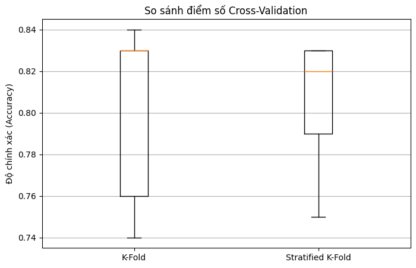

/tmp/ipykernel_4034/2030406726.py:23: MatplotlibDeprecationWarning: The 'labels' parameter of boxplot() has been renamed 'tick_labels' since Matplotlib 3.9; support for the old name will be dropped in 3.11.
plt.boxplot([kf_scores, skf_scores], labels=['K-Fold', 'Stratified K-Fold'])

from sklearn.linear_model import LogisticRegressionprint("--- Huấn luyện mô hình Logistic Regression ---")# Khởi tạo mô hình Logistic Regressionlogistic_model = LogisticRegression(random_state=42, multi_class='multinomial', solver='lbfgs', max_iter=1000)# Huấn luyện mô hìnhlogistic_model.fit(X_train, y_train)# Đánh giá độ chính xác trên tập kiểm tralogistic_accuracy = logistic_model.score(X_test, y_test)print(f"Độ chính xác của Logistic Regression trên tập kiểm tra: {logistic_accuracy:.4f}")
--- Huấn luyện mô hình Logistic Regression ---
Độ chính xác của Logistic Regression trên tập kiểm tra: 0.8333
/usr/local/lib/python3.12/dist-packages/sklearn/linear_model/_logistic.py:1247: FutureWarning: 'multi_class' was deprecated in version 1.5 and will be removed in 1.7. From then on, it will always use 'multinomial'. Leave it to its default value to avoid this warning.
warnings.warn(
from sklearn.model_selection import GridSearchCV, RandomizedSearchCVfrom scipy.stats import randintprint("\n--- So sánh Grid Search và Random Search cho max_depth, min_samples_leaf, criterion ---")# Khởi tạo lại estimator cơ bản (không có max_depth cụ thể để tìm kiếm)basic_estimator = DecisionTreeClassifier(random_state=42)# Định nghĩa không gian tham số cho Grid Searchparam_grid = {'max_depth': list(range(4, 16)),# 'min_samples_leaf': [5, 10, 15, 20],'criterion': ['gini', 'entropy']}# KFold chiến lược cross-validation (có thể dùng skf đã định nghĩa trước đó nếu muốn)cv_strategy = StratifiedKFold(n_splits=5, shuffle=True, random_state=42) # Re-using skf from previous cell# 1. Grid Searchprint("\nChạy Grid Search...")grid_search = GridSearchCV(basic_estimator, param_grid, cv=cv_strategy, scoring='accuracy', n_jobs=-1)grid_search.fit(X_train, y_train)print(f"Grid Search - Best parameters: {grid_search.best_params_}")print(f"Grid Search - Best cross-validation accuracy: {grid_search.best_score_:.4f}")# 2. Random Searchprint("\nChạy Random Search...")# Định nghĩa không gian tham số cho Random Search# Sử dụng các danh sách tương tự để so sánh trực tiếpparam_distributions = {'max_depth': list(range(4, 16)),# 'min_samples_leaf': [5, 10, 15, 20],'criterion': ['gini', 'entropy']}# Tổng số kết hợp trong Grid Search là 7 * 4 * 2 = 56# Chọn n_iter = 20 để khám phá một phần đáng kể không gian nàyrandom_search = RandomizedSearchCV(basic_estimator, param_distributions, n_iter=20, cv=cv_strategy, scoring='accuracy', random_state=42, n_jobs=-1)random_search.fit(X_train, y_train)print(f"Random Search - Best parameters: {random_search.best_params_}")print(f"Random Search - Best cross-validation accuracy: {random_search.best_score_:.4f}")print("\n--- So sánh kết quả --- ")print(f"Grid Search tìm thấy tham số tốt nhất: {grid_search.best_params_} với độ chính xác {grid_search.best_score_:.4f}")print(f"Random Search tìm thấy tham số tốt nhất: {random_search.best_params_} với độ chính xác {random_search.best_score_:.4f}")# So sánh hiệu suất trên tập kiểm tra với tham số tốt nhấtgrid_best_estimator = grid_search.best_estimator_random_best_estimator = random_search.best_estimator_grid_test_accuracy = grid_best_estimator.score(X_test, y_test)random_test_accuracy = random_best_estimator.score(X_test, y_test)print(f"\nĐộ chính xác trên tập kiểm tra (Grid Search): {grid_test_accuracy:.4f}")print(f"Độ chính xác trên tập kiểm tra (Random Search): {random_test_accuracy:.4f}")
--- So sánh Grid Search và Random Search cho max_depth, min_samples_leaf, criterion ---
Chạy Grid Search...
Grid Search - Best parameters: {'criterion': 'entropy', 'max_depth': 10}
Grid Search - Best cross-validation accuracy: 0.8029
Chạy Random Search...
Random Search - Best parameters: {'max_depth': 10, 'criterion': 'entropy'}
Random Search - Best cross-validation accuracy: 0.8029
--- So sánh kết quả ---
Grid Search tìm thấy tham số tốt nhất: {'criterion': 'entropy', 'max_depth': 10} với độ chính xác 0.8029
Random Search tìm thấy tham số tốt nhất: {'max_depth': 10, 'criterion': 'entropy'} với độ chính xác 0.8029
Độ chính xác trên tập kiểm tra (Grid Search): 0.7533
Độ chính xác trên tập kiểm tra (Random Search): 0.7533
from sklearn.ensemble import RandomForestClassifier# Initialize the Random Forest Classifierrf_classifier = RandomForestClassifier(random_state=42)# Train the modelrf_classifier.fit(X_train, y_train)# Evaluate the model on the test setrf_accuracy = rf_classifier.score(X_test, y_test)print(f"Accuracy of Random Forest Classifier on the test set: {rf_accuracy:.4f}")
Accuracy of Random Forest Classifier on the test set: 0.8400
rf_classifier.score(X_train, y_train)
1.0
from sklearn.model_selection import GridSearchCV, RandomizedSearchCVfrom sklearn.ensemble import RandomForestClassifierfrom scipy.stats import randintprint("--- Tìm kiếm tham số tốt nhất cho Random Forest --- ")# Khởi tạo mô hình Random Forest cơ bảnrf_basic_estimator = RandomForestClassifier(random_state=42)# Định nghĩa không gian tham số cho Grid Searchparam_grid_rf = {'n_estimators': [50, 100, 150],'max_depth': [5, 10, 15, None], # None nghĩa là độ sâu tối đa không giới hạn'min_samples_leaf': [1, 2, 4],'criterion': ['gini', 'entropy']}# Sử dụng chiến lược cross-validation đã định nghĩa trước đó (StratifiedKFold)cv_strategy = StratifiedKFold(n_splits=5, shuffle=True, random_state=42)# 1. Grid Search cho Random Forestprint("\nChạy Grid Search cho Random Forest...")grid_search_rf = GridSearchCV(rf_basic_estimator, param_grid_rf, cv=cv_strategy, scoring='accuracy', n_jobs=-1)grid_search_rf.fit(X_train, y_train)print(f"Grid Search RF - Best parameters: {grid_search_rf.best_params_}")print(f"Grid Search RF - Best cross-validation accuracy: {grid_search_rf.best_score_:.4f}")# 2. Random Search cho Random Forestprint("\nChạy Random Search cho Random Forest...")# Định nghĩa không gian tham số cho Random Searchparam_distributions_rf = {'n_estimators': randint(50, 200),'max_depth': randint(5, 20), # Hoặc sử dụng [5, 10, 15, None] với các giá trị cụ thể'min_samples_leaf': randint(1, 10),'criterion': ['gini', 'entropy']}random_search_rf = RandomizedSearchCV(rf_basic_estimator, param_distributions_rf, n_iter=30, cv=cv_strategy, scoring='accuracy', random_state=42, n_jobs=-1)random_search_rf.fit(X_train, y_train)print(f"Random Search RF - Best parameters: {random_search_rf.best_params_}")print(f"Random Search RF - Best cross-validation accuracy: {random_search_rf.best_score_:.4f}")print("\n--- So sánh kết quả của Grid Search và Random Search cho Random Forest --- ")print(f"Grid Search RF tìm thấy tham số tốt nhất: {grid_search_rf.best_params_} với độ chính xác {grid_search_rf.best_score_:.4f}")print(f"Random Search RF tìm thấy tham số tốt nhất: {random_search_rf.best_params_} với độ chính xác {random_search_rf.best_score_:.4f}")# So sánh hiệu suất trên tập kiểm tra với tham số tốt nhấtgrid_best_estimator_rf = grid_search_rf.best_estimator_random_best_estimator_rf = random_search_rf.best_estimator_grid_test_accuracy_rf = grid_best_estimator_rf.score(X_test, y_test)random_test_accuracy_rf = random_best_estimator_rf.score(X_test, y_test)print(f"\nĐộ chính xác trên tập kiểm tra (Grid Search RF): {grid_test_accuracy_rf:.4f}")print(f"Độ chính xác trên tập kiểm tra (Random Search RF): {random_test_accuracy_rf:.4f}")
--- Tìm kiếm tham số tốt nhất cho Random Forest ---
Chạy Grid Search cho Random Forest...
Grid Search RF - Best parameters: {'criterion': 'gini', 'max_depth': 10, 'min_samples_leaf': 2, 'n_estimators': 150}
Grid Search RF - Best cross-validation accuracy: 0.8629
Chạy Random Search cho Random Forest...
Random Search RF - Best parameters: {'criterion': 'gini', 'max_depth': 11, 'min_samples_leaf': 2, 'n_estimators': 181}
Random Search RF - Best cross-validation accuracy: 0.8629
--- So sánh kết quả của Grid Search và Random Search cho Random Forest ---
Grid Search RF tìm thấy tham số tốt nhất: {'criterion': 'gini', 'max_depth': 10, 'min_samples_leaf': 2, 'n_estimators': 150} với độ chính xác 0.8629
Random Search RF tìm thấy tham số tốt nhất: {'criterion': 'gini', 'max_depth': 11, 'min_samples_leaf': 2, 'n_estimators': 181} với độ chính xác 0.8629
Độ chính xác trên tập kiểm tra (Grid Search RF): 0.8533
Độ chính xác trên tập kiểm tra (Random Search RF): 0.8533